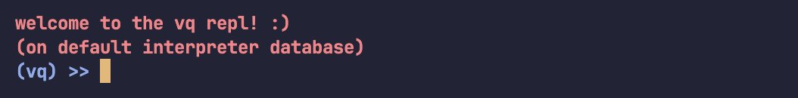

|
vkdb v0.1
A time series database engine in C++.
|
|
vkdb v0.1
A time series database engine in C++.
|
First, clone the project and cd into the directory.
Then, make the build directory and build the project with CMake.
From the build folder, you can run the tests.
From the build folder, you can also run any of the examples.
Add this to your CMakeLists.txt file—it lets you use vkdb by fetching the most recent version into your project's build.
Simply include the database header, and you'll have access to the database API.
interpreter_default (more on this later). As these instances have in-memory components, this can cause unexpected behaviour if they (and they likely will) become out-of-sync.You can manipulate tables with the database API, both with methods or queries.
vkdb::Table::clear.With the database API, you can run queries via strings, files, and the REPL.
With the table API, you can run queries via the query builder.
You can also play around with vq by running vkdb::VQ::run...(). This operates on a reserved database called interpreter_default (which, consequently, you should not use as a database name).
 |
|---|
| The vq playground REPL. |
This is generally for experimental purposes—there's not much to gain from it in practice besides having a playground.
Feel free to use vkdb::random<>. Any arithmetic type (with no cv- or ref-qualifiers) can be passed in as a template argument, and you can optionally pass in a lower and upper bound (inclusive).